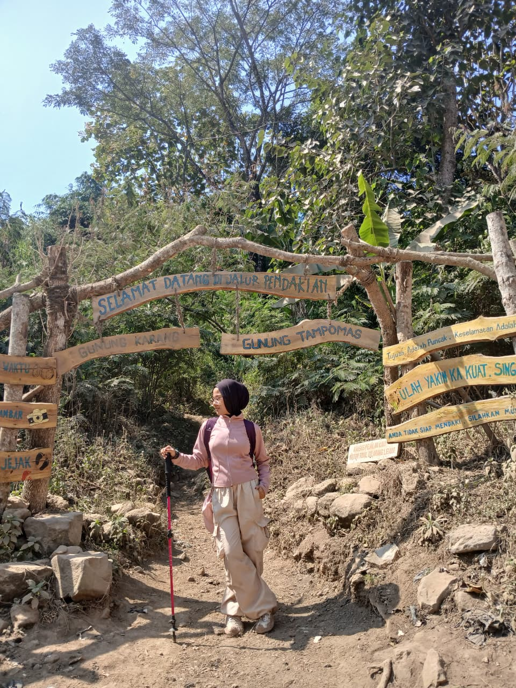
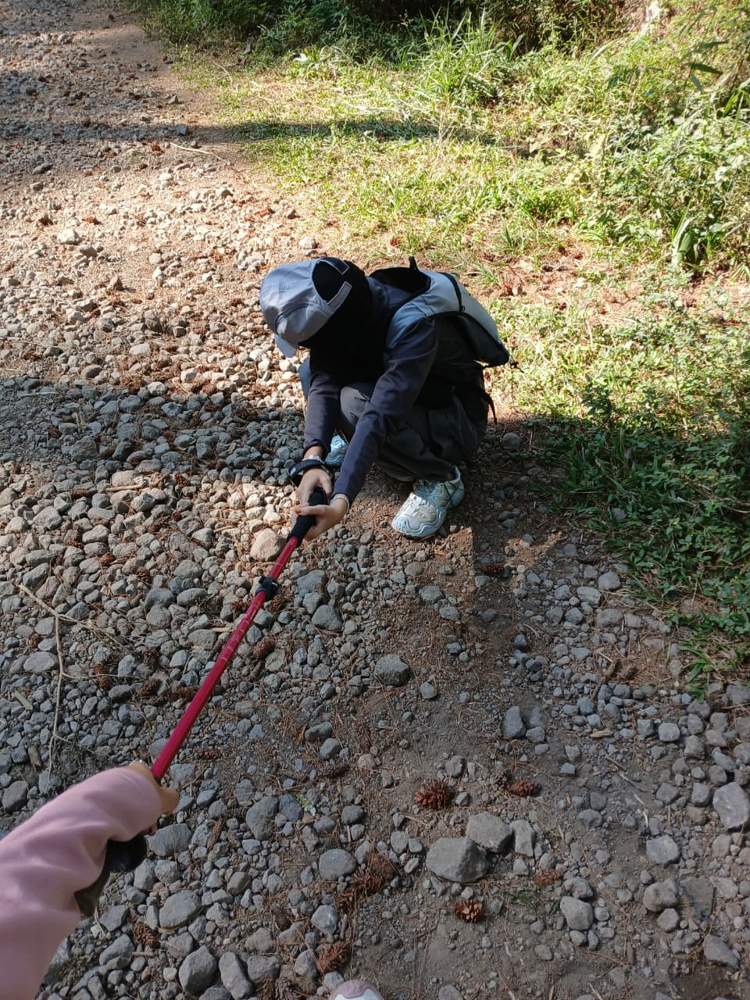
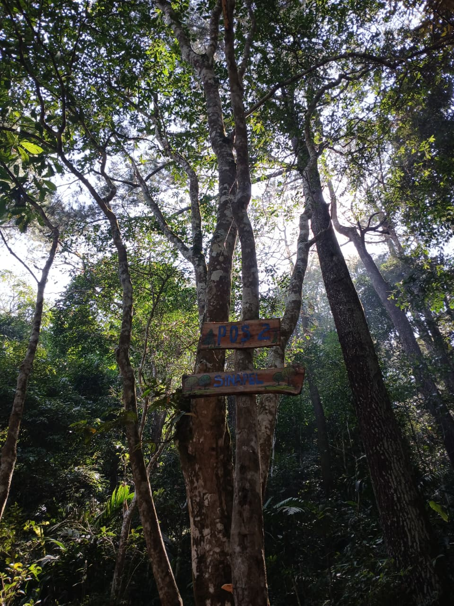
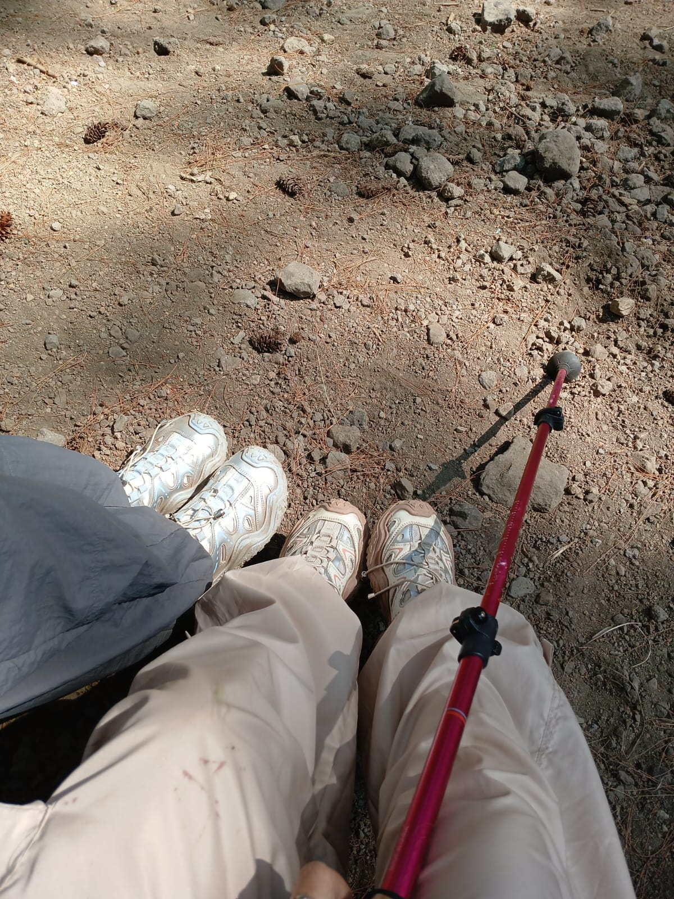

Via Cibeureum
Basecamp Gunung Tampomas via Cibeureum.
Sumedang, Jawa Barat 1.684 mdpl
Panduan ringkas sebelum mendaki Gunung Tampomas, dari gambaran jalur sampai barang yang sebaiknya dibawa.
Lihat paket TampomasGunung api di tanah Sumedang
Gunung Tampomas berada di Kabupaten Sumedang, Jawa Barat, dengan ketinggian sekitar 1.684 meter di atas permukaan laut. Pendakian membawa kita melewati kawasan hutan dan medan yang terus menanjak menuju area puncak.
Jarak, waktu tempuh, dan kondisi jalur bisa berbeda menurut pintu masuk, cuaca, serta kondisi terbaru. Tanyakan informasi jalur dan aturan terkini kepada basecamp sebelum berangkat.
Baca medan, atur tenaga
Secara umum, pendakian gunung seperti Tampomas melewati jalur hutan dan tanjakan menuju punggungan serta kawasan puncak. Medan bisa berupa tanah, akar, atau batu; setelah hujan, jalur dapat lebih licin.
Ini gambaran umum, bukan peta navigasi. Konfirmasi rute, estimasi waktu, sumber air, dan kondisi jalur langsung ke pengelola basecamp.
Registrasi, cek perlengkapan, dan dengarkan arahan petugas.
Jaga langkah di tanah, akar, dan bagian menanjak. Atur jeda sebelum kelelahan.
Ikuti batas area yang dibuka. Perhatikan cuaca dan waktu untuk turun dengan aman.
Dua basecamp pendakian
Berikut dua lokasi pendakian yang dibagikan: Basecamp via Cibeureum dan BC Cibueuk Tampomas di Padasari. Klik peta untuk membukanya di Google Maps dan pastikan informasi akses terkini kepada pengelola.
Basecamp Gunung Tampomas via Cibeureum.
BC Cibueuk Tampomas, Padasari, Kecamatan Cimalaka, Sumedang.
Lihat pengalaman pendaki lain
Klik gambar untuk menonton video “Gunung Tampomas Sumedang via Cibeureum — Informasi dan Estimasi (GPS Track)”.
 TONTON DI YOUTUBE
TONTON DI YOUTUBE
Pendakian Tampomas bersama guide lokal
Open trip gabungan atau private untuk rombongan sendiri. Pemula boleh ikut; pilih paket dan tanyakan jadwal yang tersedia.
1 hari · tek-tok
Gabung dengan peserta lain. Cocok untuk pendaki solo dan pemula yang ingin didampingi guide.
2 hari 1 malam
Perjalanan kelompok dengan satu malam berkemah di lokasi yang diizinkan pengelola.
1 hari · tek-tok
Guide khusus untuk rombongan sendiri. Tarif dasar untuk maksimal 4 peserta.
2 hari 1 malam
Guide khusus untuk rombongan sendiri, dengan rencana camping di lokasi yang mendapat izin.
Galeri perjalanan




Persiapan sederhana, pendakian lebih siap
Bekal minum yang cukup, makanan praktis, dan cadangan energi.
Jaket hangat, pakaian ganti, jas hujan, serta kaus kaki cadangan.
Sepatu dengan grip baik, tas nyaman, lampu kepala, dan baterai cadangan.
P3K pribadi, obat rutin, peluit, pelindung matahari, dan identitas.
Datang sebagai tamu alam
Konfirmasi sebelum berangkat
Basecamp pendakian via Cibeureum
0818-0980-7475Nomor telepon yang tercantum pada listing Google Maps. Hubungi untuk menanyakan kondisi jalur, aturan, dan informasi terbaru; pastikan kembali bila nomor tidak tersambung.
Buka lokasi basecamp di Google Maps